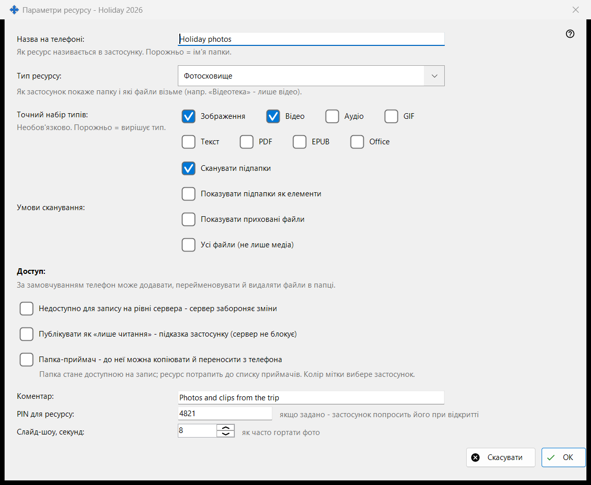
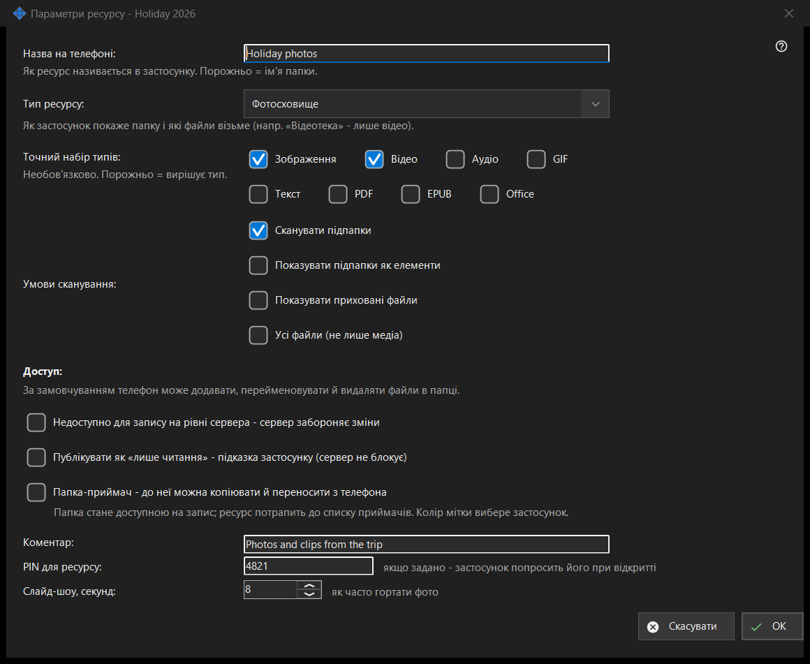

Параметри ресурсу
Призначення
Параметри однієї спільної папки: її назва на телефоні, тип, які файли показувати, хто може їх змінювати та кілька додаткових можливостей. Відкривається кнопкою «Редагувати» головного вікна, з рядка папки та з майстра ресурсу. Справжній заголовок закінчується назвою папки.


Порядок дій
- Задайте назву, яку покаже телефон.
- Виберіть тип ресурсу або точний набір медіа.
- Задайте умови сканування.
- Виберіть доступ.
- Відкрийте «Додаткові параметри», щоб задати коментар, PIN та інтервал слайд-шоу.
- Натисніть OK.
Елементи вікна
Назва та тип
«Назва на телефоні:» - так папку названо в застосунку; порожнє значення означає назву папки. «Тип ресурсу:» пропонує Звичайна папка, Аудіотека, Відеотека, Фотосховище та Документи. «Точний набір типів:» вибирає точні види (Зображення, Відео, Аудіо, Текст, Усі файли); порожнє значення означає, що вирішує тип.
Умови сканування
Сканувати підпапки, показувати підпапки як елементи, показувати приховані файли та показувати всі файли, а не лише медіа.
Доступ
За замовчуванням телефон може додавати, перейменовувати й видаляти файли в папці. Режим лише читання - справжнє блокування: сервер відхиляє зміни. Підказка лише читання тільки каже застосунку сховати кнопки редагування; сервер нічого не блокує. Папка-приймач може отримувати копії та переміщені файли з телефона; вона стає доступною для запису й потрапляє до списку приймачів, а її колір вибирає застосунок.
Додаткові параметри
Коментар (необов'язково), PIN для ресурсу (застосунок просить його під час відкриття ресурсу) та інтервал слайд-шоу в секундах. Налаштування надсилаються на сервер після підтвердження.
Налаштування менеджера · Налаштування спільного доступу SFTP · Налаштування сервера обміну